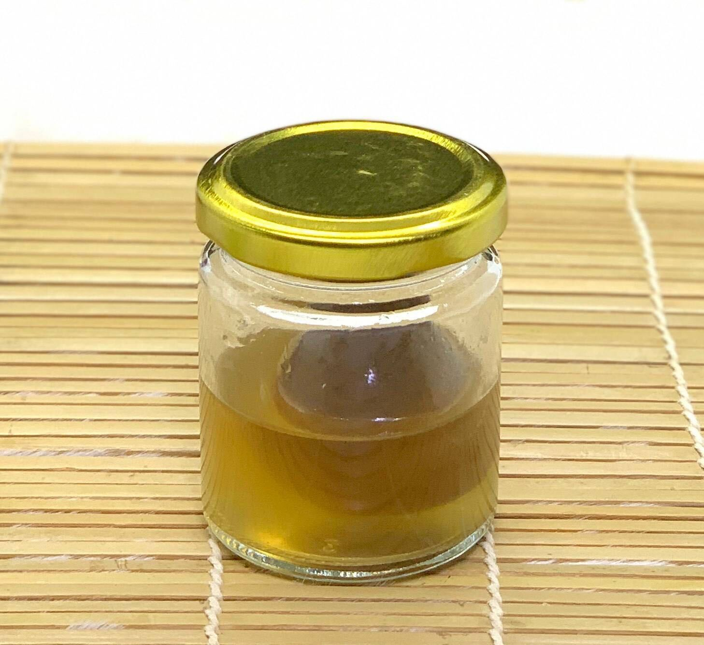
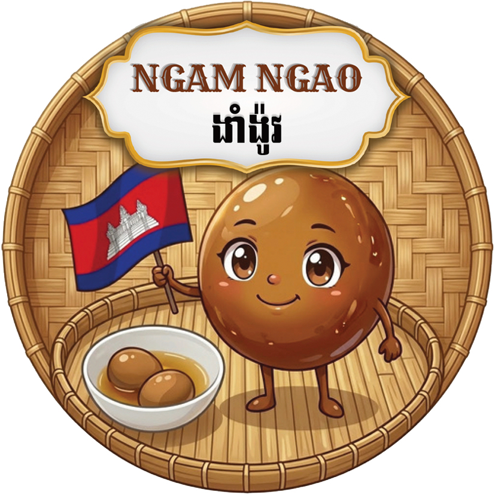
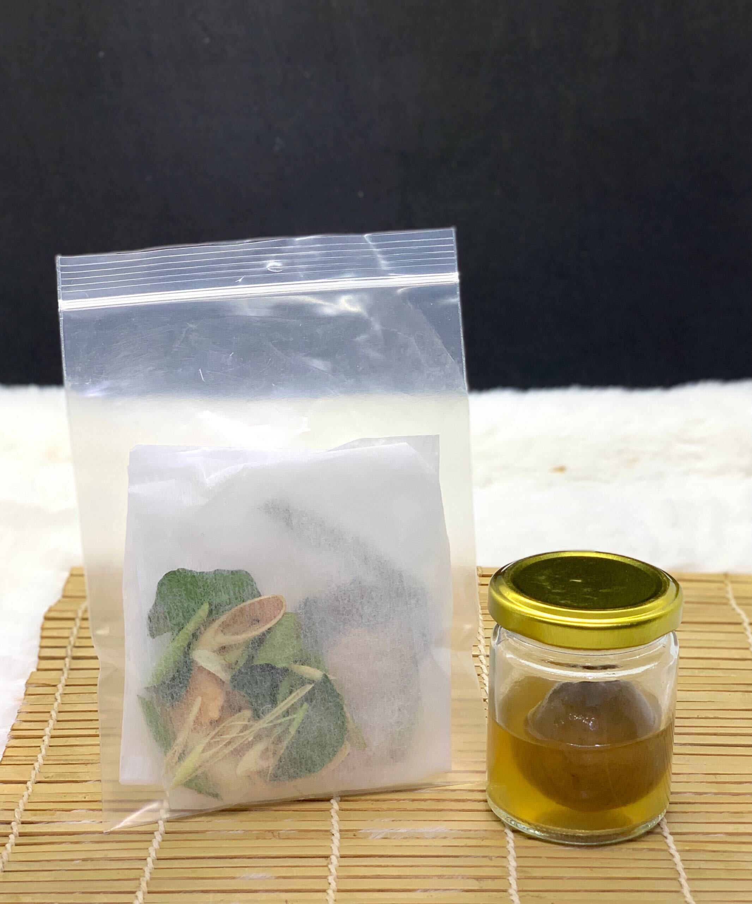
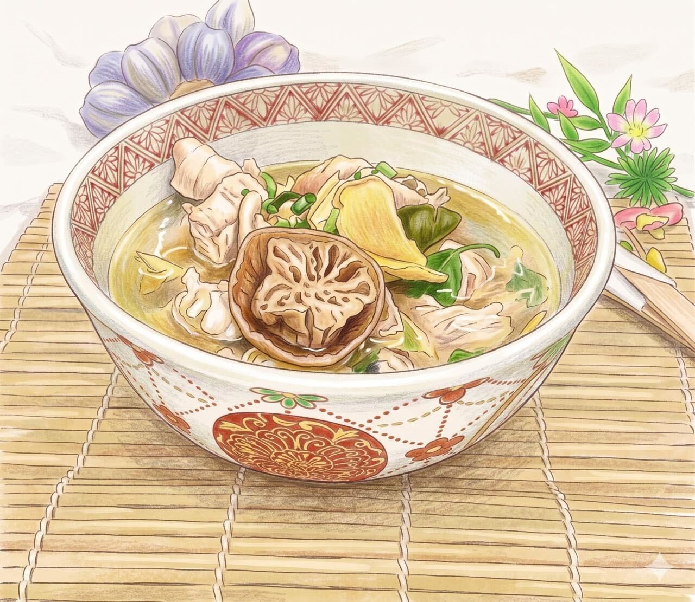
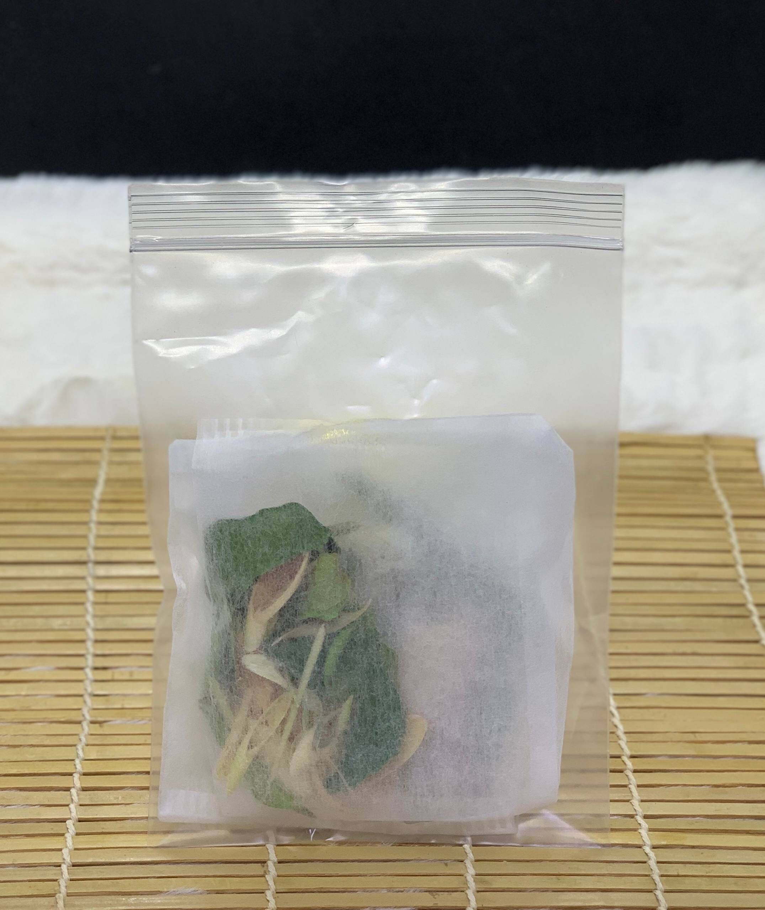

Pickled lime
塩漬けライム
スープの味を引き締める主役です。種を取り、仕上げに加えると、苦味を抑えながら熟成した酸味が広がります。
Cambodian pickled lime soup kit
カンボジアの塩漬けライム「ニャムガウ」と、レモングラスやこぶみかんの葉を合わせた乾燥ハーブ。 鶏肉を煮るだけでは出せない、深い酸味と香りを家庭の鍋へ。
What is Nyam Gau?
ニャムガウは、ライムを塩に漬けて熟成させたカンボジアの保存食。 生のライムの鋭い酸味とは違い、塩味、ほのかな苦味、熟成したまろやかさが重なります。
鶏肉の澄んだだしに加えると、暑い国の食卓らしい、すっと飲める一杯に。 仕上げに乾燥ハーブの香りを重ねると、ひと口目からカンボジアの台所が近くなる味です。

The flavor story

Pickled lime
スープの味を引き締める主役です。種を取り、仕上げに加えると、苦味を抑えながら熟成した酸味が広がります。

Dried herbs
レモングラスやこぶみかんの葉の香りで、鶏だしがカンボジアらしい味に変わります。乾燥タイプなので、家で保管しやすい食材です。
How to cook
乾燥ハーブを軽く炒めて、香りを立たせる。
鶏肉を加えて表面をなじませ、水を入れて煮る。
アクを取り、ナンプラーと塩で味を調える。
種を除いた塩漬けライムを仕上げに入れ、酸味を決める。


Why it works
Online shop
鶏肉、ナンプラー、ねぎは身近な材料でそろいます。味の中心になる2つを通販で用意すれば、週末の昼ごはんにも間に合います。
Recommended
塩漬けライムと乾燥ハーブをまとめた、スープ作りの基本セット。

Bring Cambodia home
ニャムガウは、特別なレストランだけの味ではありません。 いつもの台所に、熟成ライムの酸味とハーブの香りを加えられます。
商品を見に行く